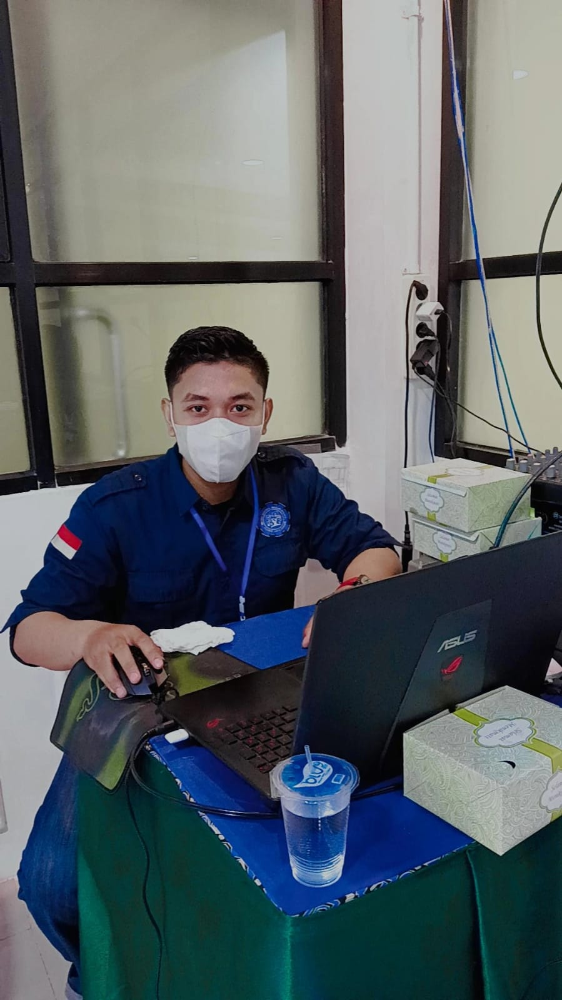

|
Perkenalkan Nama saya Putra Aditya, Biasa dipanggil Putra. saya Berkuliah di Politeknik Aisyiyah Pontianak, Jurusan Teknologi Informasi.  Jangan berharap pekerjaanmu dimudahkan, tapi berharaplah pundakmu dikuatkan. Makin awal kamu memulai sebuah pekerjaan, maka akan makin awal pula kamu melihat hasil.
|